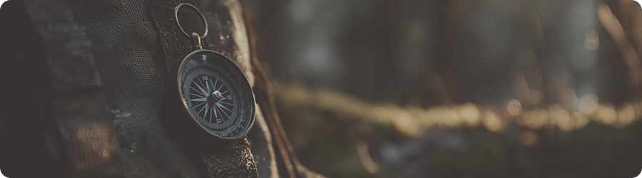

Компас
Базовые принципы ориентирования
Что такое компас
Компас — простой и надёжный инструмент навигации. Он не зависит от батареи и помогает определить направление даже в густом лесу.
Даже базовое понимание работы компаса даёт ощущение контроля и позволяет увереннее ориентироваться на местности.
Почему стоит взять компас в лес
Надёжность
Компас работает в любых условиях и не зависит от батареи или сигнала.
Простота
Освоить базовые принципы можно за несколько минут практики и внимания.
Уверенность
Знание направления помогает сохранять спокойствие даже в незнакомом лесу.
Как компас помогает ориентироваться
Основная задача компаса — показать направление на север. Зная, где находится север, можно определить стороны света и выстроить нужное направление движения.
Перед началом прогулки полезно свериться с картой и представить расположение троп и ориентиров. Это помогает заранее понять, куда двигаться и как найти обратный путь.
На что обращать внимание
Эти ориентиры помогают контролировать направление и не отклоняться от маршрута.
Почему важно регулярно проверять направление
В лесу легко незаметно сбиться с курса. Даже небольшой поворот может со временем увести далеко от маршрута.
Периодическая проверка направления помогает сохранить нужный курс и вовремя скорректировать движение.
Как пользоваться компасом
01
Держи компас ровно
Компас должен лежать горизонтально, чтобы стрелка могла свободно вращаться.
02
Найди север
Подожди, пока стрелка остановится и укажет на север.
03
Выбери направление
Определи нужную сторону света и повернись в этом направлении.
04
Двигайся по ориентирам
Выбери заметный объект впереди и двигайся к нему, проверяя направление.
Навык, который делает лес понятнее
Компас не усложняет прогулку, а делает её спокойнее и безопаснее. Он помогает лучше понимать пространство вокруг и чувствовать уверенность в своих действиях.
Даже базовый навык ориентирования значительно снижает тревожность и делает лес предсказуемым.
